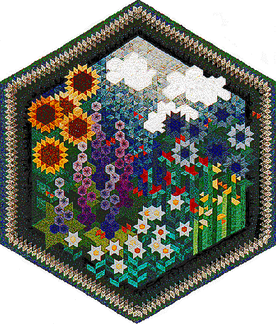

The Other Side of My Grandmother's Flower Garden The Other Side of My Grandmother's Flower Garden
The Other Side of My Grandmother's Flower Garden The Other Side of My Grandmother's Flower Garden
| #P101..........$12.95 64" X 75" I grew up seeing my Grandmother quilting. Her love of quilting was transferred to me at a very young age. One of my favorite memories is of the traditional Grandmother's Flower Garden quilt that graced the bed in the guest room at their house. I vowed that one day I'd make a Grandmother's Flower Garden quilt. Before realizing that dream, I decided that my Grandmother's Flower Garden quilt would be double sided -- one side a traditional Grandmother's Flower Garden (a tribute to my maternal Grandmother the quilter), the other side a twist on the name (a tribute to my paternal Grandmother, who always had a beautiful garden). When I sprained my foot and had to keep it elevated, I found that I couldn't quilt or piece in that position. But I could draw! So I designed this quilt. The back is pieced with the traditional Grandmother's Flower Garden, hence the name. Escape to a floral fantasy by making this award winning quilt using English paper piecing and applique techniques. Pattern includes full size templates for a 64" X 75" quilt | 
|